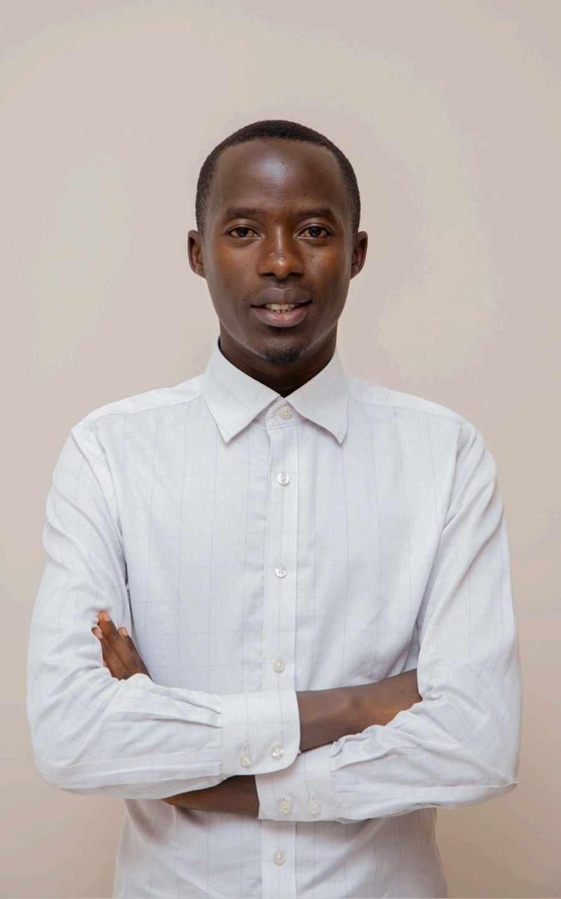
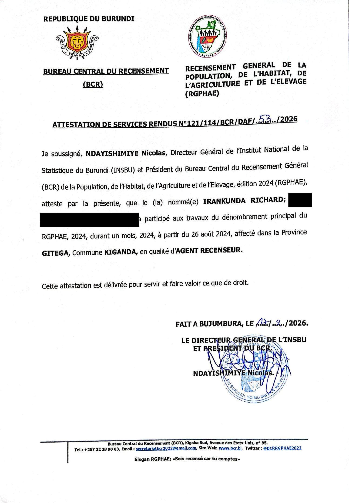
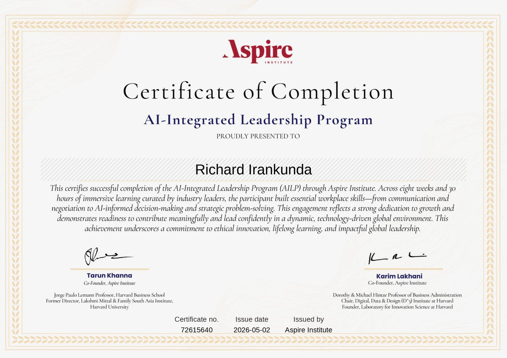
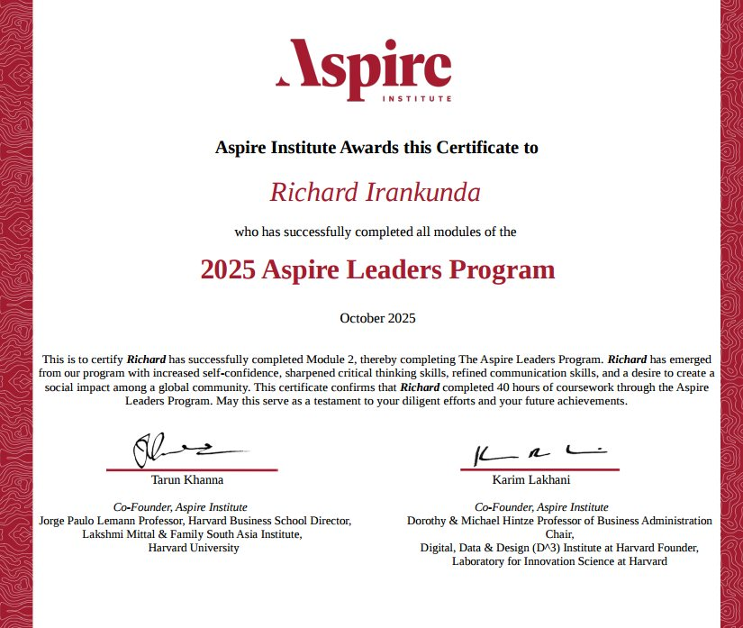
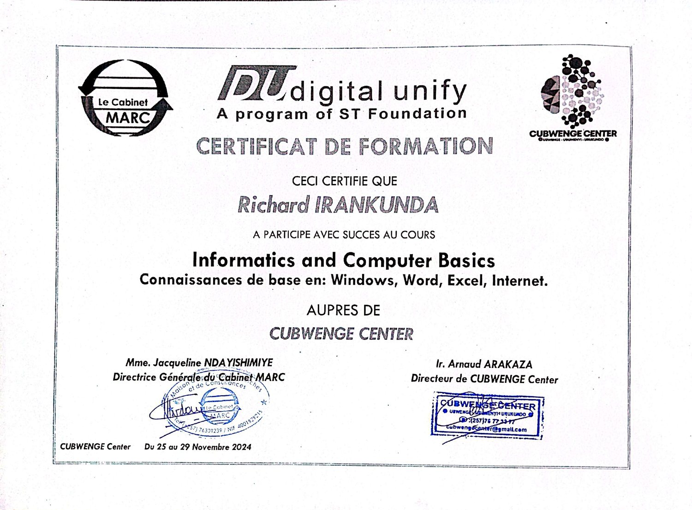
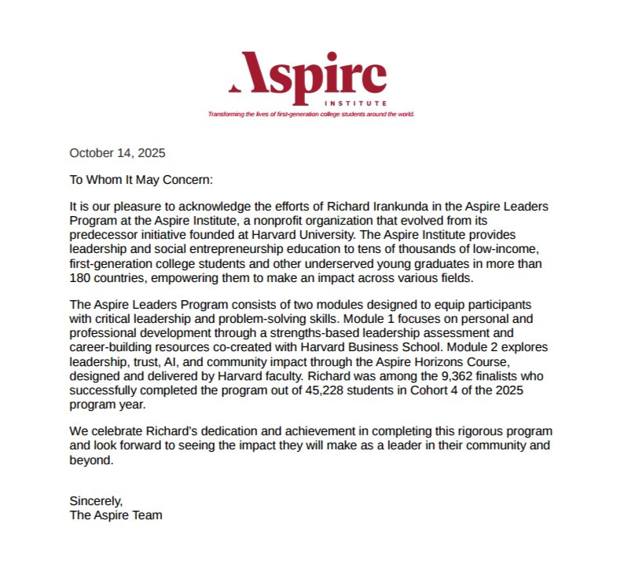

Bachelor's degree in Biochemistry (BAC III)
University of Burundi. Theory and laboratory practice in ion identification, assays, titrations and chemical analyses.
Biochemist, University of Burundi

01
I am a responsible, rigorous and organised person with a Bachelor's degree in Biochemistry from the University of Burundi.
During the national census (RGPHAE) I collected data from more than 500 households and met a precise daily target, which strengthened my rigor and my ability to reach objectives.
At HAKIKRIS I convinced supermarkets to sell our products and checked stock availability while I was still studying. That work built my communication, my negotiation and my ability to handle pressure. The AI-Integrated Leadership Program and the Aspire Leaders Program of the Aspire Institute added to my curiosity, leadership and commitment to continuous learning.
Bujumbura, Burundi
French (fluent), English (intermediate), Kirundi (native)
University of Burundi. Theory and laboratory practice in ion identification, assays, titrations and chemical analyses.
Lycée d'Excellence de Nyarucamo. Biology, chemistry and earth sciences, plus school projects that built teamwork and a sense of responsibility.
02
My profile combines scientific training with commercial and field experience. I understand both the technical side of a product and the operational reality around it.
Presented products to supermarkets and convinced more than 10 of them to sell them under our brand. Built a list of over 100 customers with their feedback on the products and tracked customer payments.
Followed products and stock levels, coordinated with farmer suppliers and checked that supplies matched demand. Analysed the geographic coverage of sales zones to identify where the market could expand.
Collected, checked and recorded demographic data for the national census following the official methodology, and reported inconsistencies for supervisor review.
03
Visited supermarkets to convince them to sell our products under our own name.
Worked with farmer suppliers and checked that product stocks were sufficient at HAKIKRIS.
Met daily targets at HAKIKRIS while completing my university studies.
Completed online programs in leadership, AI and computer basics, and use digital and AI tools in my work.
04
Central Bureau of the Census (BCR) · Census enumerator

View certificate of services ↗HAKIKRIS, rice production and processing company · Product manager
Aspire Institute · Online program

View certificate ↗Aspire Institute · Online program

View certificate ↗STMicroelectronics Foundation · Cubwenge Center

View certificate ↗05
A letter of recommendation and a professional reference.
Letter of recommendation
Letter dated October 14, 2025, from the Aspire Team
The letter acknowledges my work in the Aspire Leaders Program and confirms that I was among the 9,362 finalists who completed it, out of 45,228 students in Cohort 4 of the 2025 program year.

Read the letter ↗Professional reference
Legal Representative, HAKIKRIS